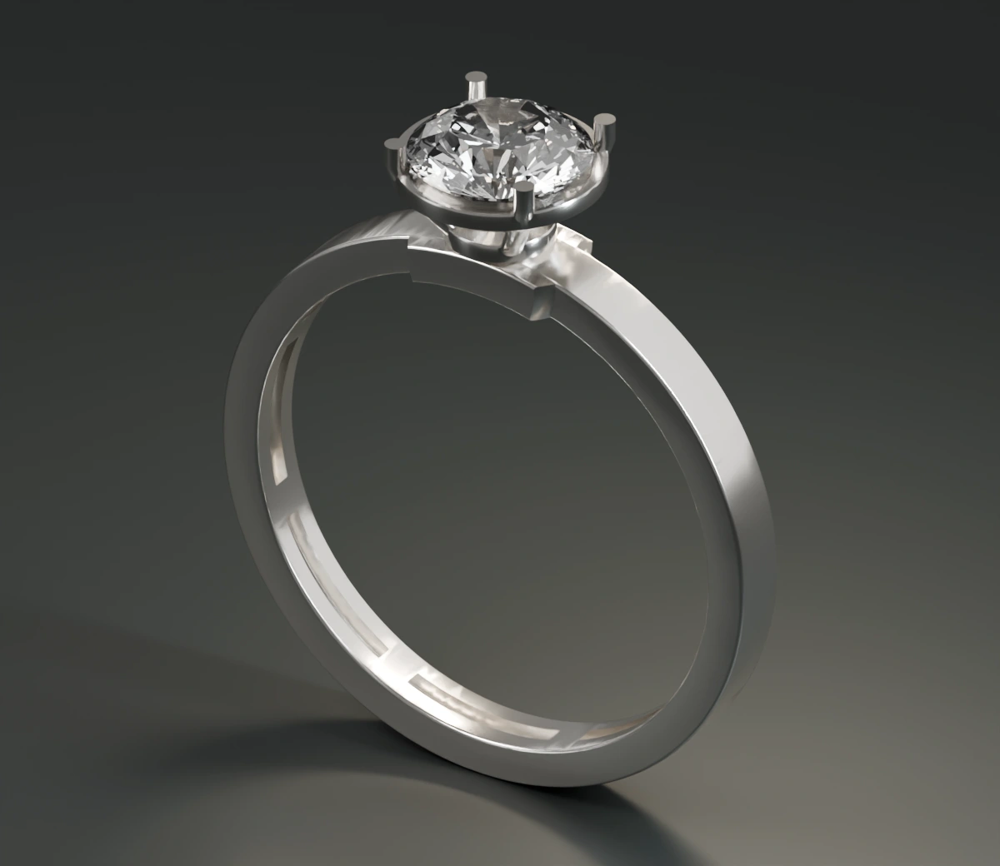

Загружается модель…
Облегчённый
солитер
Шесть внутренних карманов облегчают шинку. Четыре прямых крапана доступны для обжима после посадки круглого камня.
- Внутренний диаметр
- 17,00 мм
- Круглая вставка
- Ø 6,00 мм
- Запас крапанов над рундистом
- 0,700 мм
- Расчётная масса металла
- 585 · 2,57 г
750 · 2,95 г

В архиве — металл и камень в миллиметрах, редактируемая оправа Brep в Rhino 8 и результаты проверки посадки.